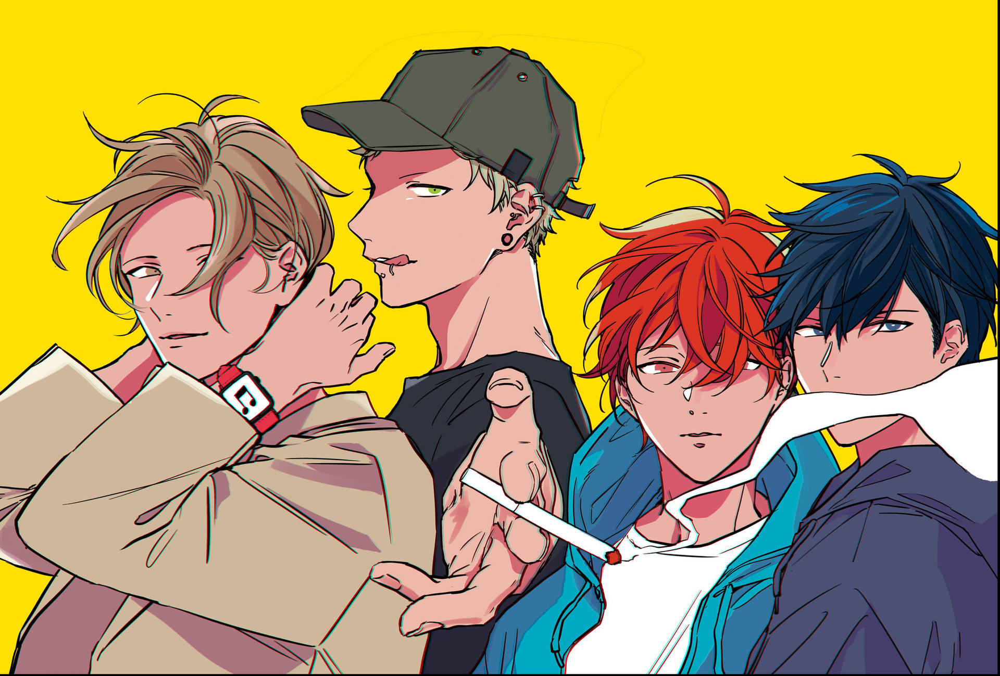

Given Anime
Adaptación audiovisual
Una adaptación de serie de anime se anunció durante una conferencia de prensa de Fuji TV el 14 de marzo de 2019. La serie se estrenó el 11 de julio de 2019 en Noitamina, el bloque de programación de anime nocturno de la red, lo que hace que Given se lance como la primera serie de género shōnen-ai en Noitamina. La serie está sindicada por Crunchyroll, que transmite simultáneamente la serie fuera de Asia.El anime es producido por Lerche, con Hikaru Yamaguchi como directora y Yuniko Ayana como guionista. Centimillimental interpreta el tema de apertura de la serie "Kizuato", mientras que el grupo del anime Given interpreta el tema final de la serie "Marutsuke". El anime presenta un nuevo elenco de voces, que vuelve a emitir los roles del drama de audio de Crown Works.
El 31 de enero de 2023, Crunchyroll anunció que la serie recibirá un doblaje en español latino, que se estrenó el 2 de febrero.
{kind=link}
{kind=link}
{kind=link}
{kind=link}
Given Manga
Novela visual
Given se ha serializado en la revista bimestral Cheri+ desde abril de 2013. En Japón, la serie se ha recopilado en cinco volúmenes tankōbon publicados por Shinshokan, constando actualmente de 35 capítulos. La traducción en español de Given fue licenciada en España por Milky Way Ediciones en marzo de 2019, con el primer volumen publicado en junio de 2019. Se publicó el segundo volumen a mediados de agosto de 2019.Given es el primer trabajo en varios volúmenes producido por la artista de manga Natsuki Kizu, después de sus dos series previas de un solo volumen Yukimura-sensei to Kei-kun (2013) y Links (2014).

Página creada por David Bolívar - Medellín, 2024